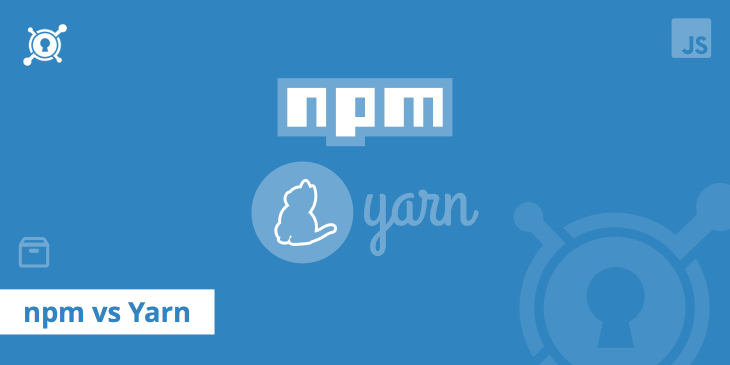
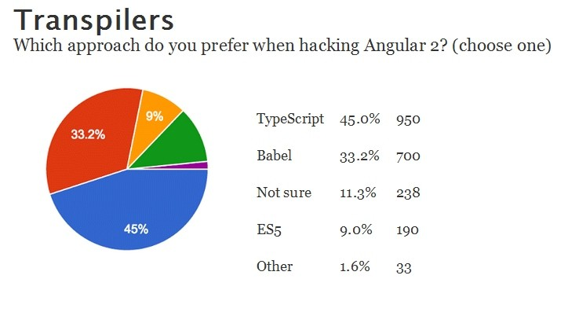
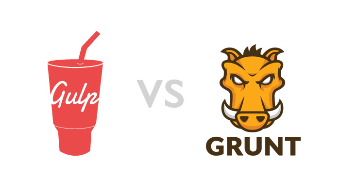
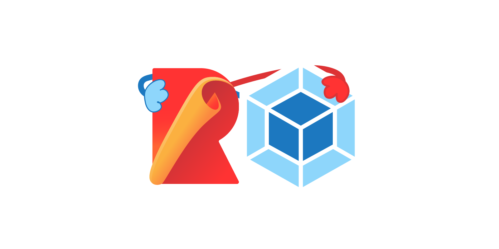

Front-End 발전 역사와 개발 생태계
Introduction
이번 포스트는 과거 JavaScript 탄생부터 시작해서 어떻게 발전해왔는지에 대한 내용과
현재 Front End 개발에 있어서 무엇을 알아야 하는 지에 대한 전반적인 기술 상황에 대해서 알아보겠습니다.
JavaScript 탄생
JavaScript라는 언어의 역사는 저의 다른 포스트에서도 볼 수 있지만 여기서도 간단하게 언급하고 넘어가겠습니다.
JavaScript언어의 역사는 1995년 Netscape사의 Brendan Eich(브랜든 아이크)에 의해 개발된 Mocha라는 언어부터 시작됩니다.
이 Mocha라는 언어는 “Prototype의 개념과 Functional Language(함수형 언어)의 특성을 가지고 Web에 동적으로 활용할 수 있는
언어를 만들어보자” 라는 취지로 2주일 이라는 굉장히 짧은 기간안에 만들어졌습니다.
추후에 Mocha -> LiveScript -> JavaScript로 개명되었고 ECMA에 ECMA-262 기술규격으로 ECMAScript라는 이름으로 표준화를
진행하게 됩니다. 이에 대응해 1996년 MicroSoft 측에서는 JScript라는 걸 만들어내서 자사의 IE 3안에 포함시켜 제공하기 시작했습니다.
이런 JavaScript는 여러가지 문제점을 내포하고 있었는데 가장 큰 문제를 꼽자면
- 구현의 어려움
- 언어의 모호성
- Cross Browsing의 한계
정도를 들 수 있습니다. 즉, 사용자 입력값을 검사하는 용도, 사용자의 이벤트를 감지해서 처리하는 용도로는 사용할 수 있지만 언어 자체가 가지고 있는 근본적인 문제때문에 사용이 힘들었습니다.
구세주의 등장 - jQuery
이 때 구세주가 등장합니다. 우리가 잘 알고 있는 jQuery library입니다.
jQuery는 open source javascript library로 순수 javascript가 가지고 있었던 DOM처리의 어려움과 Cross Browsing에 대한 issue를 해결하면서 JavaScript의 대표적 library로 사용되게 되었습니다. jQuery로 인해 JavaScript가 조금은 쓸만한 언어로 여기지면서 사용되기 시작했습니다.
그러면서 그냥 그냥 아주 소소하게 client web browser안에서 JavaScript 코드와 jQuery 코드가 이용되었던 거지요. 특별히 중요하지도 않은 단위코드 위주로 사용이 되는 그런 수준이었습니다. 그러면서 우리 기억에도 “알면 좋고 몰라도 상관없는 언어”로 인식되었습니다.
그렇게시간은 흘러갑니다.!!
1997년 ECMAScript의 초판이 나오게 됩니다. ES1이라고 합니다. 그 후 1999년에 ES3가 나오게 됩니다. 여기까지 하고 한동안
ECMAScript 표준은 쿨쿨 잠을 자게 됩니다.
다시 JavaScript에 날개를 달아보자 - HTML5
1999년 12월 W3C(World Wide Web Consortium)에서 하나의 발표를 합니다. 아시다시피 W3C는 HTML과 CSS의 표준을
관장하는 기구입니다. 이때까지 우리가 사용하는 HTML의 버전은 4.01버전이었습니다. W3C는 이 버전을 마지막으로 더 이상
HTML의 버전업은 없을 것이라고 공표하게 됩니다. 그때까지 잘 사용해왔던 HTML을 왜 버전업하지 하지 않겠다고 했을까요?
여러가지 이유가 있지만 프로그래밍 언어의 측면에서 바라보면 HTML이란 언어는 다음과 같은 한계점이 있습니다.
- 정형성 : HTML언어는 정형성이 없기때문에 유지보수에 적합하지 않다.
- 확장성 : 정해진 Tag만 이용하기 때문에 언어자체에 대한 기능적 확장이 어렵다.
W3C는 저 두가지 이유를 들어 HTML언어를 이대로 끌고 가기 보다는 좀 더 다른 수단을 강구해야 겠다고 판단합니다. W3C의 선택은
바로 XML의 도입이었습니다. 즉, HTML이 가지는 두가지 문제점을 해결할 수 있는 XML을 도입해서 새로운 Web언어의 표준을
끌고 나갈 생각이었습니다. 그 결과 2000년 들어오면서 HTML과 XML이 결합된 새로운 표준인 XHTML 1.0이 발표되게 됩니다.
W3C의 이런 의도와는 다르게 몇몇개의 회사들이 모여서 조금 다른 접근을 모색합니다. XML을 도입하지 말고 순수하게 HTML을 기능을
버전업시킬 수 있는 방법을 찾기 시작한 것이죠. 그래서 WHATWG(Web Hypertext Application Technology Working Group)이라는
Working Group이 만들어지고 이 안에서 기존의 HTML을 발전시킬 방법을 연구하게 됩니다.
( 사실 여기서 할 말이 많기 한데 자꾸 산으로 가는 느낌이라 적당히 짜르겠습니다. )
이 WG에서 나온것이 바로 현재의 표준인 HTML5입니다. HTML을 이용해서 Web Application을 만들자는 취지입니다.
이 HTML5안에 Client Web Application을 작성할 수 있는 API가 포함되어 있는데 이게 JavaScript로
되어 있습니다. 결국 HTML5가 issue화 되면서 JavaScript의 위상도 조금씩 더 올라가게 됩니다.
그래서인지 쿨쿨 잠을자던 ECMAScript 개정판(ES5)이 2009년에 등장합니다. 참고로 4판(ES4)은 버려졌습니다. 이제 슬슬
JavaScript에 대한 발전이 시작됩니다.
JavaScript의 획기적 전환점 - Node.js
2013년 Node.js가 출시됩니다. 아무리 HTML5라고 해도 이때까지의 JavaScript는 Browser안에서 동작하는 언어였습니다.
우리가 알고 있는 Java, C#과 같은 언어가 될 수 없는 태생적 한계가 있는거죠. 이런 browser에 갇힌 JavaScript를
browser 외부로 탈출하게끔 만들어준 일등공신이 바로 Node.js입니다. 결국 JavaScript로 다른 언어처럼 OS위에서 동작하는
일반 application을 작성할 수 있는 길이 열린것이고 그에 따라 언어의 위상이 완전히 변했습니다.
그에 발맞춰 ECMAScript도 빠르게 변화하기 시작했습니다. 2015년에 ECMAScript 2015(ES6)가 등장하면서 JavaScript 언어자체에
아주 큰 변화들이 많이 생겼습니다. 현재 ECMAScript 2016(ES7)까지 나온 상태입니다. 조금 지나면 ES8이 표준화되어서 나오겠네요.
거의 1년마다 새로운 배포판이 나올정도로 빠르게 변화하면서 언어적 측면에서 가지고 있던 많은 문제점들을 극복하려고 노력하고 있습니다.
현재(2018년 1월) 대부분의 browser들은 ES6를 지원하고 있습니다.
여기에 접속해 보시면 특정 browser에 대해
각 ECMAScript의 버전 호환성을 보실 수 있습니다.
이제 IE는 고만쓰도록 해요. 제발….
아직 완벽하게 Cross Browsing이 안되는데 어떻게 하느냐에 대한 문제는 Babel, TypeScript와 같은
transpiler를 이용해서 해결할 수 있습니다.
Babel, TypeScript는 ES6(ES7) 문법으로 쓰여있는 JavaScript code를 ES5 형태의 JavaScript로 변환시켜주기 때문에
IE에서 ES6지원이 안됨에도 불구하고 ES5로 변환해서 사용할 수 있습니다.
변화의 속도가 너무 빠름
그런데 문제는 기술의 발전 속도가 너무 빠르다는데 있습니다. 또한 알아야 할게 한두 가지가 아니구요. 과거 Back End에서 사용했던 프로그래밍 기술과 여러가지 개발 툴의 개념들이 다 Front End로 넘어왔기 때문입니다. 너무 많은기술들이 빠르게 생기고 빠르게 사라지고 있습니다.
사실 2-3년전에 자주 사용했던 JavaScript Library와 Framework들 중 많은 것들이 이미 다른 것으로 대체되었습니다. 그렇다고 손 놓고 있을 순 없으니 현재 상태에서 우리가 Front End 개발을 하기 위해 필수적으로 알아야 하는 것 몇가지만 살펴보도록 하겠습니다.
이것정도는 알고 가자
- Package Manager :
NPM, Yarn

외부 라이브러리를 사용할 경우 해당 라이브러리를 설치, 삭제, 의존성 관리등을 해야 하는데 이를 위한 도구가
몇몇 존재합니다. 그중 하나만 하자면 당연 npm입니다. Node Package Manager의 약자이고 Node.js를 살짝 맛보시면
npm이 어떻게 동작하는지 아실 수 있습니다. 굳이 Node.js에 대해서 학습할 필요는 없습니다. 당연히 알면 좋지만요.
- Transpiler : Babel,
TypeScript

Cross Browsing을 위한 Transpiler입니다. 비교 대상은 아닙니다. 둘 다 알아둘 필요는 있지만
저는 TypeScript는 반드시 해야 한다고 생각합니다. 앞으로 TypeScript는 더 발전할 듯 보이거든요.
하지만 배우기 쉽지 않습니다. 언어적 측면을 파고 들면 내용이 꽤나 많습니다.
다행히 TypeScript는 ECMAScript의 superset이니 ECMAScript 공부한다고 생각하시면 속 편합니다.
또한 제 개인적인 생각과는 반대로 TypeScript언어의 단점도 분명히 존재합니다. 엄격한 type checking덕분에 JavaScript가 가지는 프로그래밍의 유연함이 많이 떨어진다는 것이죠.
- 자동화 도구 : Grunt,
Gulp

빌드, 테스트, 배포등을 위한 자동화 도구입니다. 과거에는 Grunt를 많이 사용했지만 현재는 Gulp인듯 합니다. 시간 좀 지나면 Gulp도 Grunt와 마찬가지로 역사속으로 사라지게 되겠지만 지금은 Gulp가 대세입니다.
- module bundler :
webpack, rollup

코드 재사용을 위한 모듈화 도구들과 bundler 역시 여러가지 있는데 요즘 많이 사용하는 건 webpack입니다.
ES6 들어오면서 언어적 차원에서 Module을 지원하기 시작했고 이런 Module들을 하나로 모아 Packaing하는 작업이
필요하게 되었습니다. 이를 위한 도구 역시 발전을 하고 있구요. 과거에는 Common.js, Require.js를 이용하여
처리했다면 최근에는 webpack, rollup을 이용하여 처리합니다.
- Framework & Library :
Angular,React,Vue.js
우리의 목적은 사실 저 위의 3가지를 배우는 것입니다. 각기 나름대로의 장점과 특징들을 가지고 있습니다. 개인적으로는 블로그내에 저 세가지의 강좌를 개설하는게 2018년 상반기의 블로그 목표입니다. 대세는 Angular이지만 React의 성장세 역시 가히 폭발적입니다. 아직까지(2018년 1월기준) Vue.js는 Angular와 React 만큼의 성장세는 보이지 않고 있지만 이 역시 어떻게 될지는 모를일이죠
정리
위에서 “이것정도는 알고가자”라고 했지만 그 내용을 전부 다 알고 있으면 상당한 경험과 실력을 가진
Front End 개발자일 것입니다. 또 위에 포함을 안했지만 Git같은 것은 기본적으로 숙지해야 할 것이구요. 할게 너무 많네요
천천히 하나씩 해보도록 하죠 머…
그리고 “이것정도는 알고가자”에서 제가 강조한 것들은 제가 현재 사용하는 것들입니다. 그것들이 더 좋다는 보장은 어디에도 없습니다. 자기 손에 익숙한게 최고입니다. ^^
End.